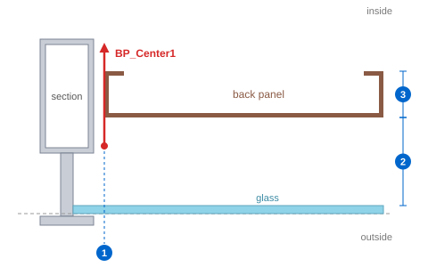
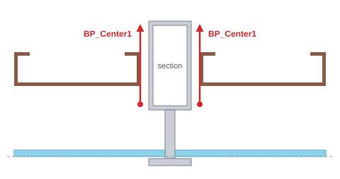
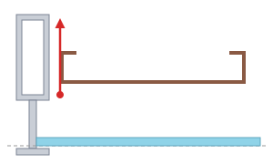
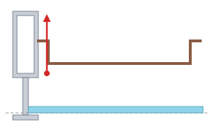
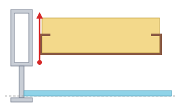

To make a BackPanel by the Section method, the section group that holds the BackPanel must contain a line on the BP_Center1 layer. The line sets the side edge of the BackPanel. The distance from the glass and the thickness are set by the values in BpOpt, not by the line.
BP_Center1 line in the section → SSP (register sections) → BpOpt (type settings) → GMD (glass face) → BP1 to BP5 → BpNo → BpList → BpTable → BpFd
| No. | What is set | Where it is set |
|---|---|---|
| 1 | Side edge of the BackPanel | Position of the BP_Center1 line in the section. It sets how far from the member the BackPanel ends. |
| 2 | Distance from the glass | Dist from Glass in BpOpt: the distance from the glass face to the front face of the BackPanel. |
| 3 | Thickness of the BackPanel | The Panel thickness in BpOpt (with the Sheet and Insulation thicknesses). |
| Item | Description |
|---|---|
| Layer | Must be the BP_Center1 layer. The BpC1 command creates this layer. |
| Section group | Add the line to the group of that section. Lines outside the group are not read. |
| Direction | Draw it straight, perpendicular to the glass face (the same direction as the glass line G_Center1). |
| Length | Draw it long enough to pass through the whole depth occupied by the BackPanel and its insulation. If the line is too short to reach the front or back face of the BackPanel, the edge cannot be cut. |
| One line per bay | If the section has a BackPanel on both sides, draw two lines, one for each bay. Do the same for a transom with bays above and below. |
| Section registration | After adding or changing a line, run SSP again. |

From the same line, the type defined in BpOpt produces the BackPanels below. In every figure the bottom is the outside (glass side).



| Item | Description |
|---|---|
| Type and flange length | Set by Type A (Inside) or Type B (Outside) and its length in BpOpt. |
| Thickness | Set by the Sheet, Panel, and Insulation thicknesses in BpOpt. |
| Distance from the glass | Dist from Glass in BpOpt. It does not depend on where the line starts. |
| Type number | Types 1 to 5 in BpOpt correspond to the commands BP1 to BP5. |
| Command | Description |
|---|---|
| BpC1 | Creates the BP_Center1 layer. |
| SSP | Section registration — run it after adding the line. |
| BpOpt | BackPanel type options — thickness, distance from the glass, and type. |
| BP1 to BP5 | BackPanel modeling — pick a glass face and create the BackPanel (Section method). |